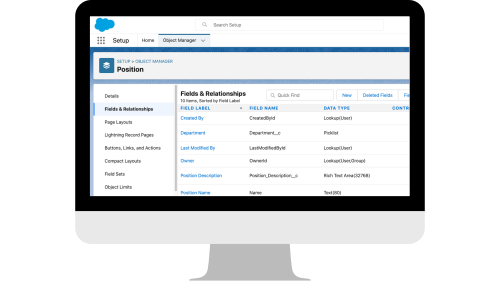
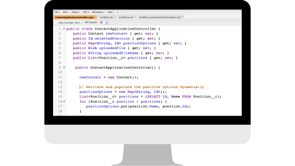
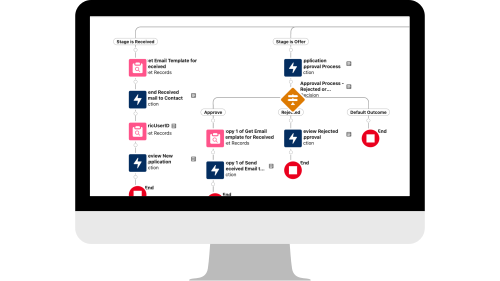
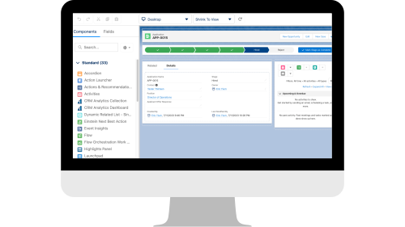
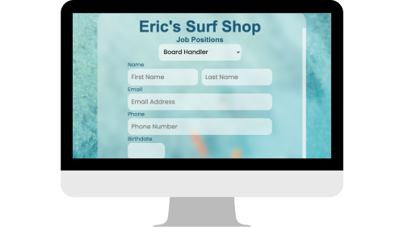
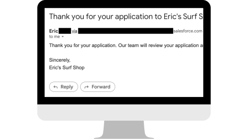

This demo application simulates a basic job application with the purpose of demonstrating fundamental capabilities in Salesforce such as Visualforce, Apex, object and relationship configuration, process automation using Flow Builder, and assisting with user experience by customizing page layouts

1
The data model defined included Position (custom object), Application (custom object), and Contact (standard object differentiated through record type). A Contact would apply to a Position through an Application with the objects being related to each other using a lookup relationship.

2
Using Apex and Visualforce, the web form dynamically retrieves Position records and using the information provided in the web form simultaneously creates a Contact and Application related to the Contact.

3
Using a record-triggered flow, logic paths were set up based on an Application's stage using a Decision element. Automation included automated emails to applicants, task creation assigned to internal users (using Get Records), and submission for Approval Process.

4
A new record page layout was created to include a Path so internal users could quickly visualize an Application's status, Related tab which includes the file attachments an applicant provided and pending approvals, and the Details tab displaying the related Contact and Position.

5
With the objects, relationships, and logic configured, testing of the web page from a user perspective allowed for discovery of any issues and assurance that the records were being created correctly from the web form.

6
Stepped through the entire process to ensure functionality for the MVP product with testing confirming intended automation such as an Application submission email confirmation being sent to the user (pictured).